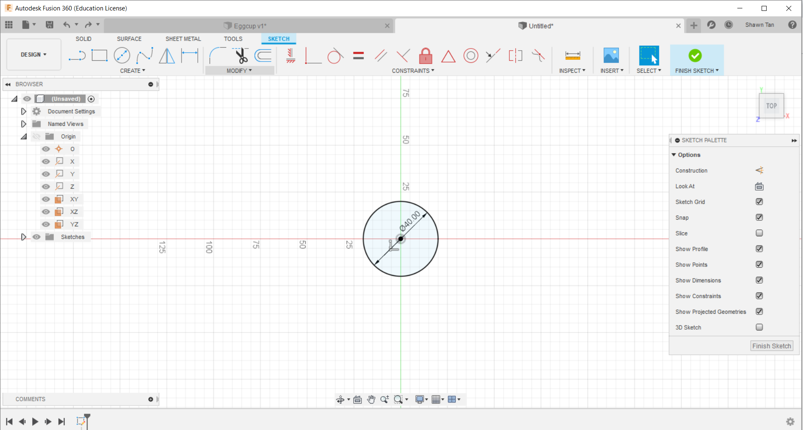
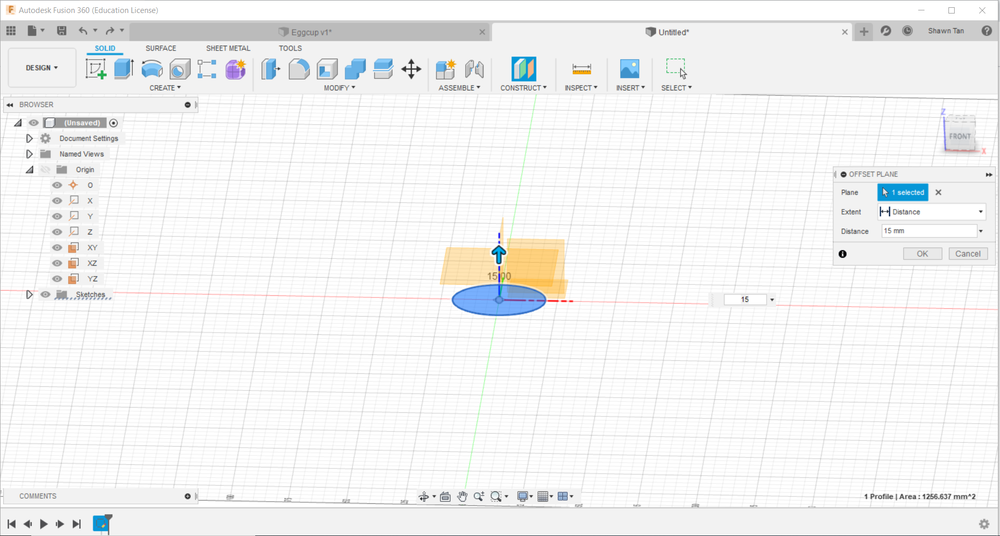
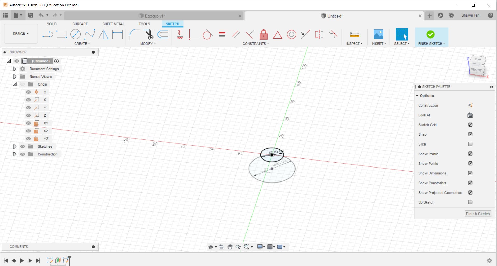
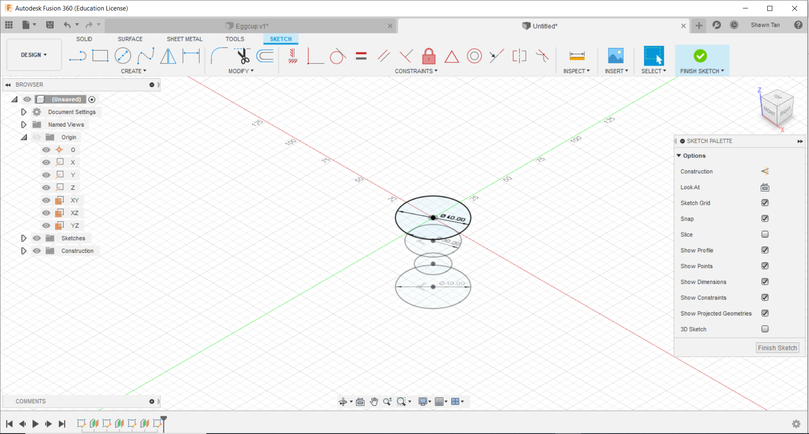
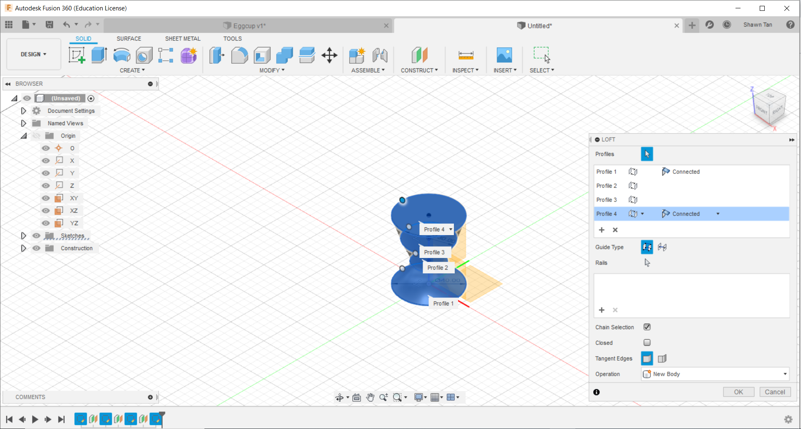
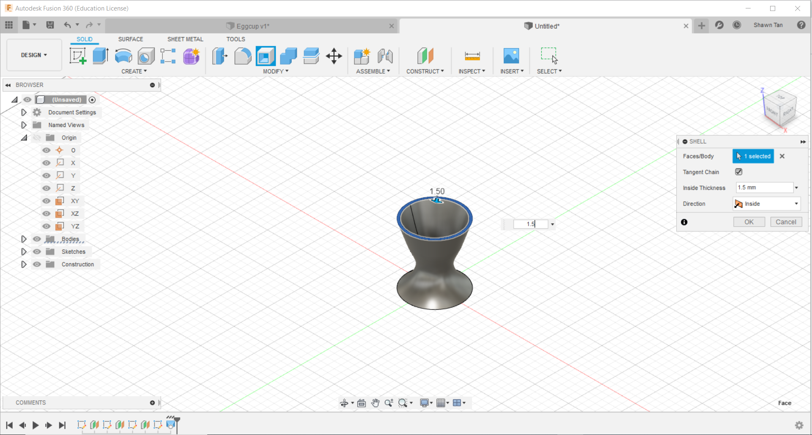

More of Fusion 360
The Eggcup
In this lesson we learnt even more functions of Fusion 360. The next item we designed was an eggcup.
We were given some liberties when creating the eggcup. Mr Chew said that we do not need to follow any existing dimensions but instead, focus more on the functions in Fusion 360. In the image above, I created a sketch on the xy plane. On said sketch I made circle with a diameter of 40mm
In this next image I created a new workplane. this can be done by going into the "Solids" tab and pressing the "Construct" drop down bar. I used the first option, offset workplane, and made an offset of 15mm
The next thing I did was to create another circle on the new workplane. I created a new sketch and made a circle of 20mm diameter
I repeated this with anoter two more circles, 30mm and 40mm diameter with workplane offset of 15mm. we can see the result in the image above.
The next thing I did was to loft the sketches together. The loft option is found under solids and after that, under create. After clicking loft, I clicked all the 4 sketches to form this shape.
The last thing to do was to shell it. The shell option can be found under solids and after that, under create. After clicking shell, I selected the top face and inputed a shell value of 1.5mm as seen in the image above.